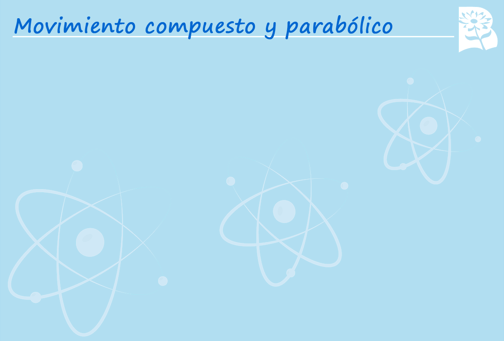

Selecciona la V si la afirmación en verdadera y F si es falsa.
En un tiro parabólico la aceleración aumenta según la distancia.
El movimiento compuesto es un movimiento combinado de otros dos
horizontales, MRU y MRUV.
En un tiro parabólico la velocidad es constante.
La trayectoria parabólica de un objeto puede ser descrita solo en el eje cartesiana de las x.